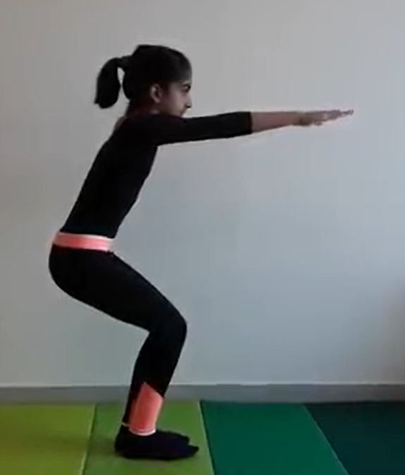

CHAIR POSE

Steps to perform Chair Pose
- Stand straight and tall with your feet slightly wider than hip-width apart and your arms at your sides.
- Inhale and lift your arms next to your ears, stretching them straight and parallel with wrists and fingers long. Keep your shoulders down and spine neutral.
- Exhale as you bend your knees, keeping your thighs and knees parallel. Lean your torso forward to create a right angle with the tops of your thighs. Keep your neck and head in line with your torso and arms. Hold for 30 seconds to 1 minute.